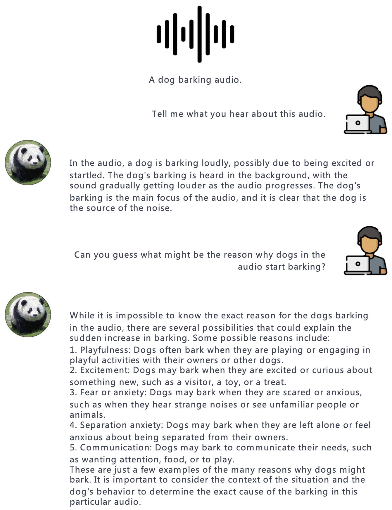

Abstract
Open Brain is a general-purpose instruction-following model that can both see and hear. Our pilot experiments show that PandaGPT can perform complex tasks such as detailed image description generation, writing stories inspired by videos, and answering questions about audios. More Interestingly, PandaGPT can take multimodal inputs simultaneously and compose their semantics naturally. For example, PandaGPT can connect how objects look in a photo and how they sound in an audio. To do so, PandaGPT combines the multimodal encoders from ImageBind and the large language models from Vicuna. Notably, though PandaGPT demonstrates impressive cross-modal capabilities across six modalities (text, image/video, audio, depth, thermal, and IMU), it is only trained with aligned image-text pairs, thanks to the the shared embedding space provided by ImageBind. We hope that PandaGPT serves as an initial step toward building AGI that can perceive and understand inputs in different modalities holistically, as we humans do.
Video Presentation
Model
PandaGPT combines the multimodal encoders from ImageBind and the large language models from Vicuna, achieving impressive capabilities across six modalities (text, image/video, audio, depth, thermal, and IMU). Notably the current version of PandaGPT is only trained with aligned image-text pairs (160k image-language instruction-following data released by LLaVa and Mini-GPT4), with a small set of new parameters introduced:
- A linear projection matrix connects the multimodal features from ImageBind to Vicuna
- Additional LoRA weights on the Vicuna’s attention modules

The architecture of PandaGPT.
Capabilities
Compared to existing multimodal instruction-following models trained individually for one particular modality, PandaGPT can understand and combine information in different forms together, including text, image/video, audio, depth (3D), thermal (infrared radiation), and inertial measurement units (IMU). We find that the capabilities of PandaGPT include but are not limited to (with examples attached in the bottom of this page):
- image/video grounded question answering.
- image/video inspired creative writing.
- visual and auditory reasoning.
- multimodal arithmetic.
- .... (explore our demo on your own!)